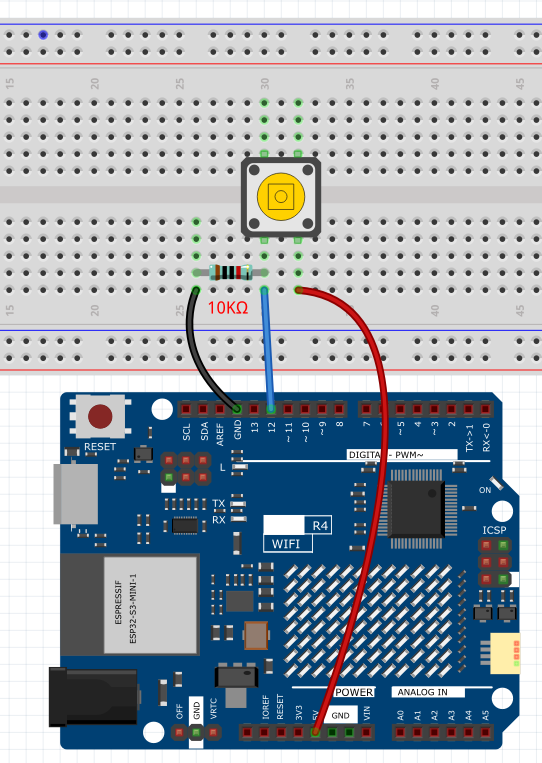

Button Control LED
Overview
In this lesson, you will learn about controlling an LED using a button with Arduino. Buttons and LEDs are fundamental components in a wide range of electronic devices, such as remote controls, flashlights, and interactive installations. In this setup, a button is used as an input device to control the state of an LED, which serves as an output device.
The button is connected to pin 12 on the Arduino Uno R4 board, and the LED is connected to pin 13. When the button is pressed, a signal is sent to the Arduino, triggering the LED to turn on. Conversely, when the button is released, the LED turns off. This simple yet effective mechanism can be the basis for more complex projects, such as home automation systems, interactive displays, and much more.
By the end of this lesson, you will understand how to read input from a button and use it to control an LED, thereby gaining a foundational understanding of input/output operations with Arduino.
Wiring
{kind=link}
Connect one end of the buttons to pin 12 which connects with a pull-down resistor. Connect the other end of the resistor to GND and one of the pins at the other end of the button to 5V. When the button is pressed, pin 12 is 5V (HIGH) and set pin 13 (integrated with an LED) as High at the same time. Then release the button (pin 12 changes to LOW) and pin 13 is Low. So we will see the LED lights up and goes out alternately as the button is pressed and released.
Code
Note
You can open the file
02_Button_LED.inounder the path ofBasic-Starter-Kit-for-Arduino-Uno-R4-WiFi-main\Codedirectly.
Code Analysis
Define Constants and Variables
In this segment, the pin numbers for the button and the LED are defined. Also, a variable
buttonStateis declared to hold the current state of the button.const int buttonPin = 12; const int ledPin = 13; int buttonState = 0;
Setup Function
The
setup()function runs once when the Arduino board starts. The pin modes for the button and the LED are set using thepinModefunction.void setup() { pinMode(buttonPin, INPUT); pinMode(ledPin, OUTPUT); }
Main Loop
The
loop()function runs repeatedly. Inside this loop, thedigitalRead()function is used to read the state of the button. Depending on whether the button is pressed or not, the LED is turned on or off.void loop() { buttonState = digitalRead(buttonPin); if (buttonState == HIGH) { digitalWrite(ledPin, HIGH); } else { digitalWrite(ledPin, LOW); } }